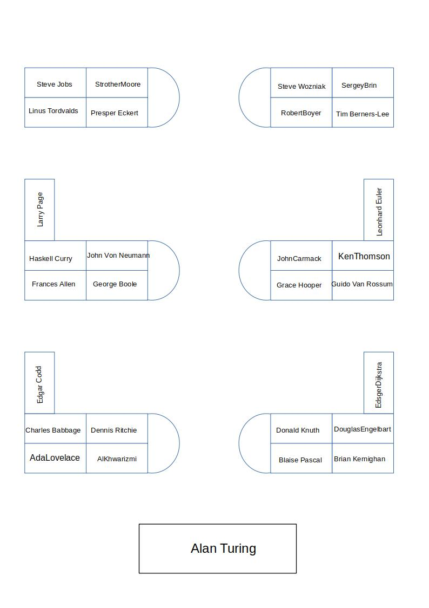

Installation ubuntu sur les postes du lycée
Modification de l'ordre de démarrage
Par défaut, ubuntu demarre en premier, pour modifier cet ordre : 1. Editer le fichier /etc/default/grub et mettre GRUB_DEFAULT=2 2. Exécuter la commande update-grub pour mettre à jour le menu de demarrage
Problème de freeze sur l'écran d'accueil
Certains ordinateurs (client légers) ont un souci de freeze sur l'écran d'accueil d'ubuntu, pour régler ce souci :
1. Faire un démarrage en recovery mode si le problème survient
2. Selectionner l'option poursuivre le démarrage normal
3. Editer le fichier de configuration grub comme ci-dessus
4. Changer la ligne GRUB_CMDLINE_LINUX_DEFAULT en ajoutant nomodeset, ce qui donne :
GRUB_CMDLINE_LINUX_DEFAULT="quiet splash nomodeset"
5. Mettre à jour Grub avec update-grub
Changer le nom du poste
Avec la commande sudo hostname <le_nom_ici>
Plan de la salle de classe avec les noms des machines :

Configurer l'accès au réseau en activant le proxy système
Proxy : 172.19.240.1 Port : 3129 Identique pour tous les protocoles
Configurer ssh pour avoir l'accès à distance :
sudo apt-get update
sudo apt-get install openssh-server
sudo ufw allow ssh
sudo systemctl enable ssh
sudo systemctl start ssh
Faire tourner le script d'administration pour installer les applis
Depuis le poste du bureau dans le répertoire Script
Créer les comptes par défaut
- Création du compte invité :
sudo adduser invite- Mettre mot de passe à invite
- Création d'un compte élève :
sudo adduser <nom_eleve>sudo chage -d 0 <nom_eleve>- permet de saisir un mot de passe lors de la première connection
Installation d'un serveur de paquet local (pour installation de logiciels tels que filius) :
- Installer un serveur apache sur le poste prof (alanturing.local) :
sudo apt-get install apache2 - Créer le répertoire /var/www/html/deb/amd64 et y stocker les paquets .deb
- Mettre à jour le descriptif des paquets avec la commande :
dpkg-scanpackages amd64 | gzip -9c > amd64/Packages.gzdans le repertoire ci dessus/var/www/html/deb/ - Ajouter sur toutes les machines une exception pour l'adresse alanturing.local dans le proxy réseau
- Modifier le fichier /etc/apt/sources.list et y ajouter la ligne :
deb [trusted=yes] http://localhost/deb/ amd64/ - Installation normale avec apt-get (update puis install) avec le nom du paquet
Connection au serveur perso de l'utilisateur dans windows :
- Ouvrir l'explorateur de fichier
- Dans autre emplacement, entrer
smb://scribe/perso/prenom.nomen remplaçantprenom.nompar ceux de l'élève - Cocher éventuellement de retenir les identifiants et mot de passe et se connecter
Activiter de façon définitive les options de Wake on Line
- Installer
ethtool(paquet apt) - Créer le fichier
etc/system/wol@.service - Y écrire le contenu suivant :
-
Taper les commandes suivantes :
sudo systemctl enable wol@enp3s0sudo systemctl start wol@enp3s0